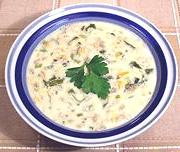

|
Clam Chowder - Rhode IslandUSA Northeast | ||||
| Makes: Effort: Sched: DoAhead: |
14 cups ** 1 hr Yes |
Rhode Island clam chowder is well within the variation range of New England Clam Chowder except the clams are specified as Rhode Island Quahogs (The largest size Hard Clams). | |||
|
Some antique recipes put in a little chopped tomato but today tomato is reserved for Manhattan Clam Chowder. Make: - (45 min)
|